airLight1 v03
Diagnostic only · scale: drift · head 0.827
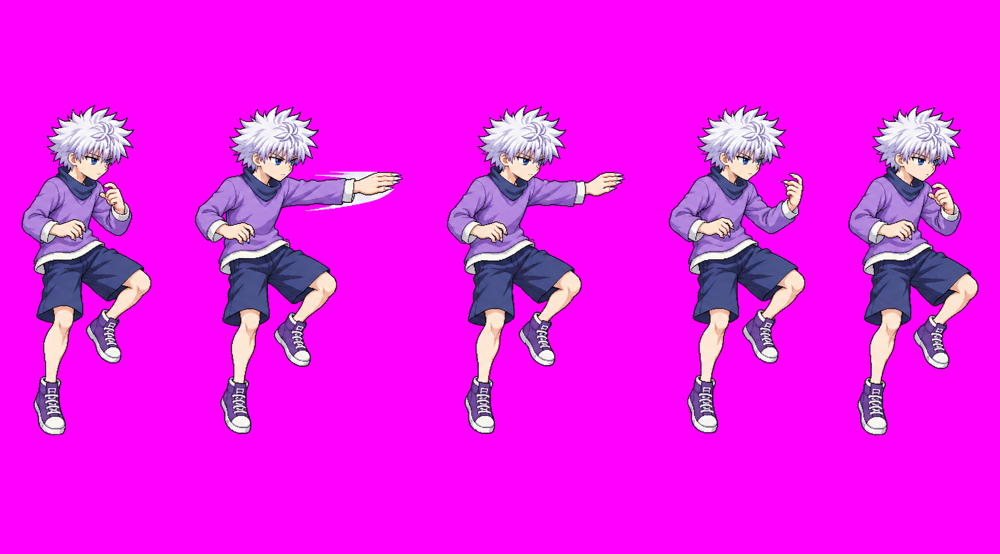
19 latest assets · 25 versioned strips retained in the PR. Diagnostic heads · Diagnostic contact sheet · Game (old approved sheet)
Diagnostic only · scale: drift · head 0.827

Diagnostic only · scale: drift · head 0.928
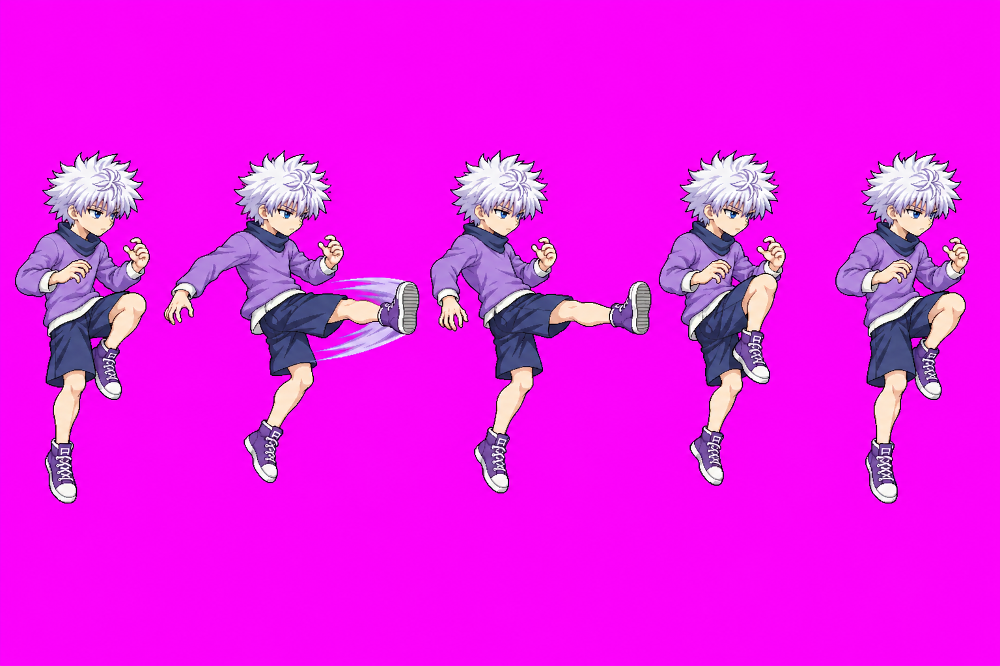
Diagnostic only · scale: ok · head 0.964
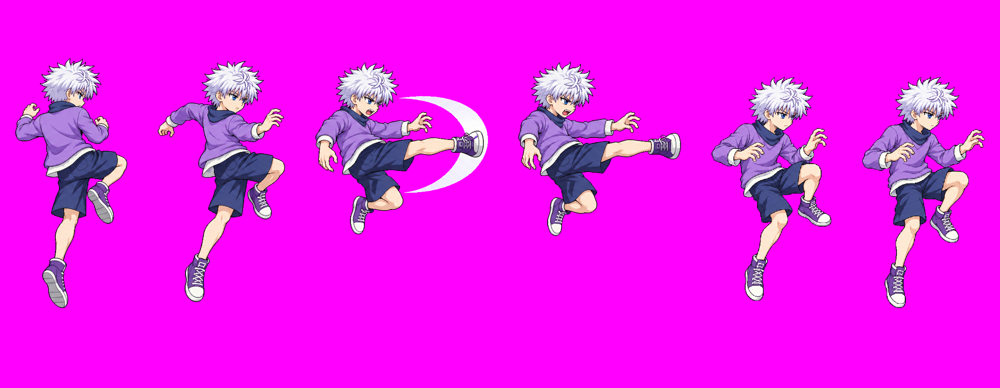
Diagnostic only · scale: ok · head 0.98
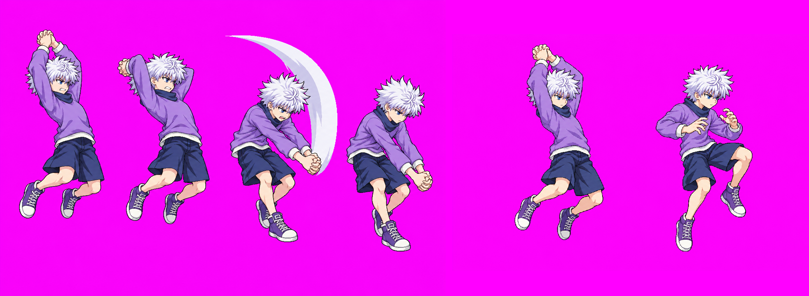
Diagnostic only · scale: ok · head 0.987
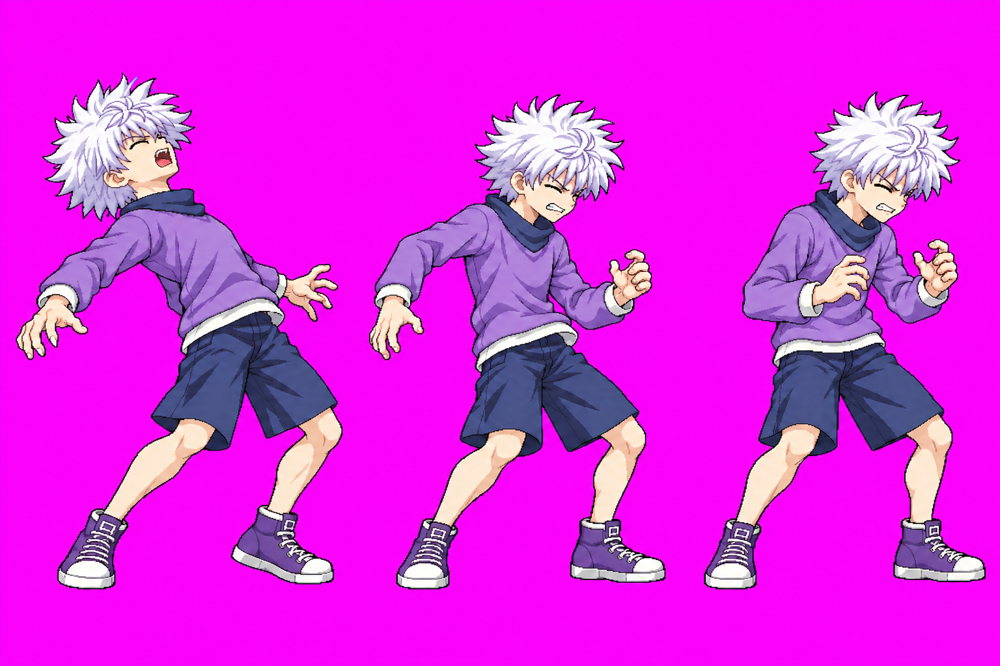
Diagnostic only · scale: drift · head 0.916
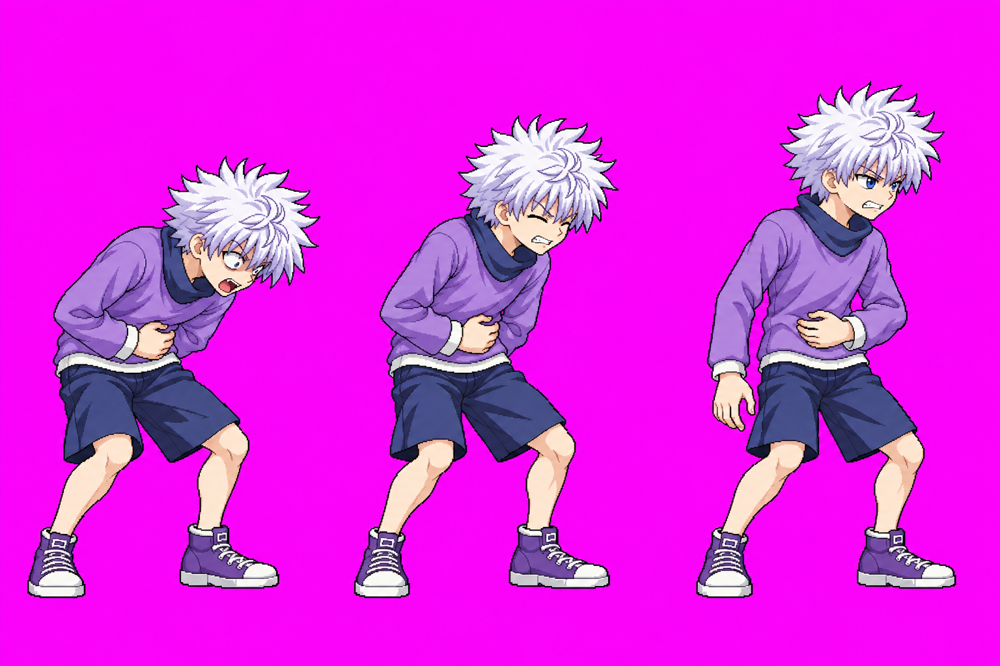
Diagnostic only · scale: pop · head 0.94
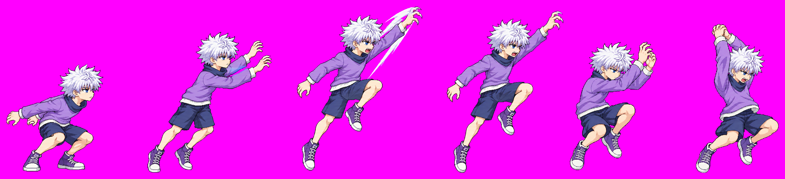
Diagnostic only · scale: ok · head 1.007
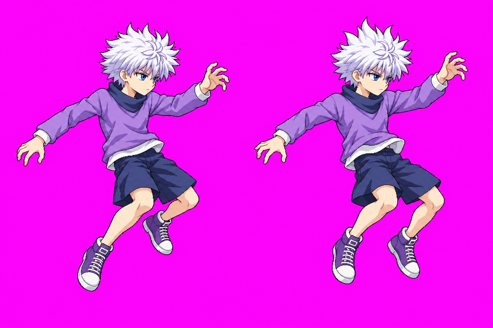
Diagnostic only · scale: ok · head 1.005
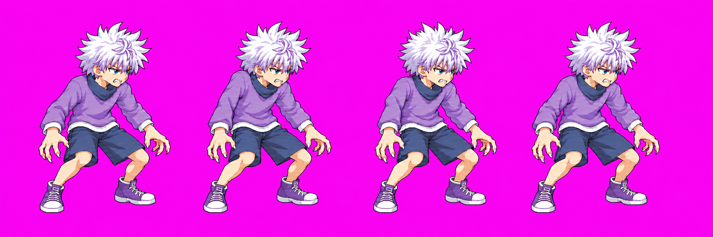
Diagnostic only · scale: drift · head 0.933
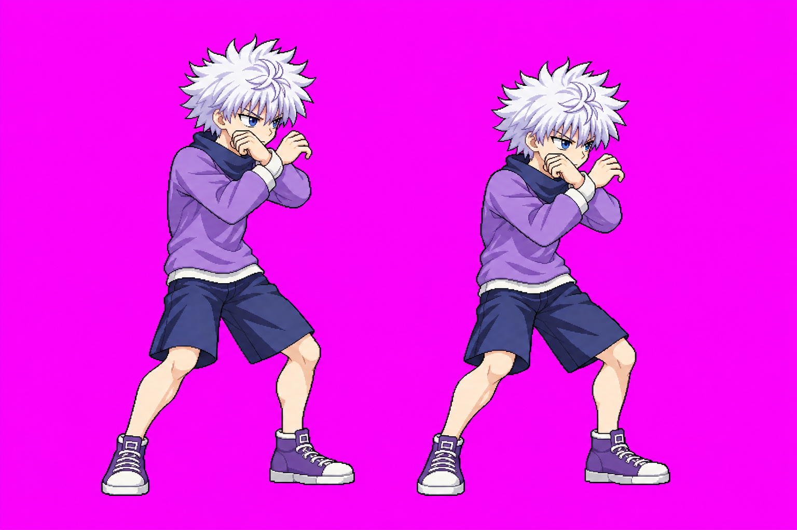
Diagnostic only · scale: ok · head 0.98
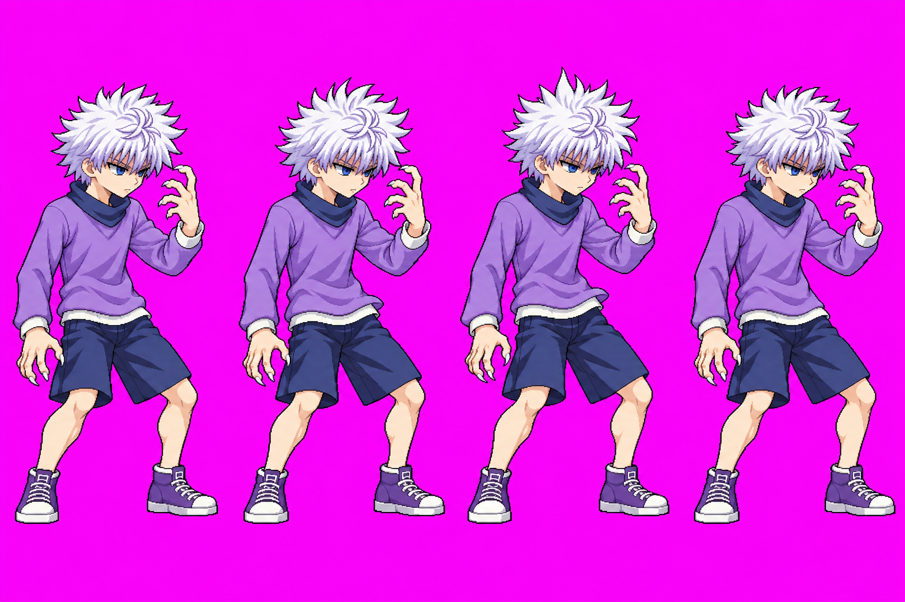
Diagnostic only · scale: ok · head 0.99
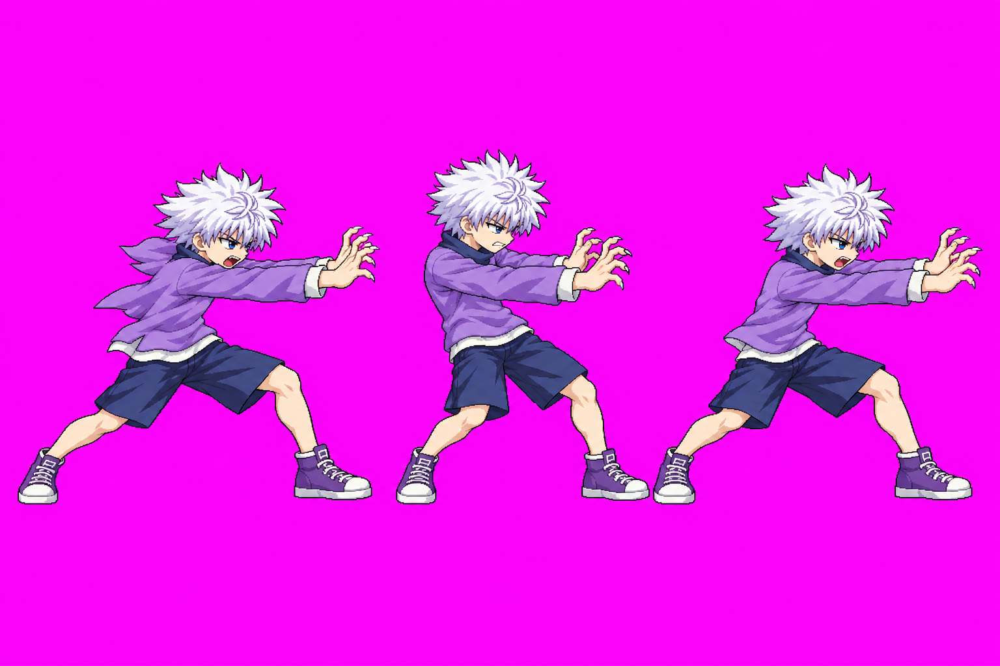
Diagnostic only · scale: ok · head 0.952
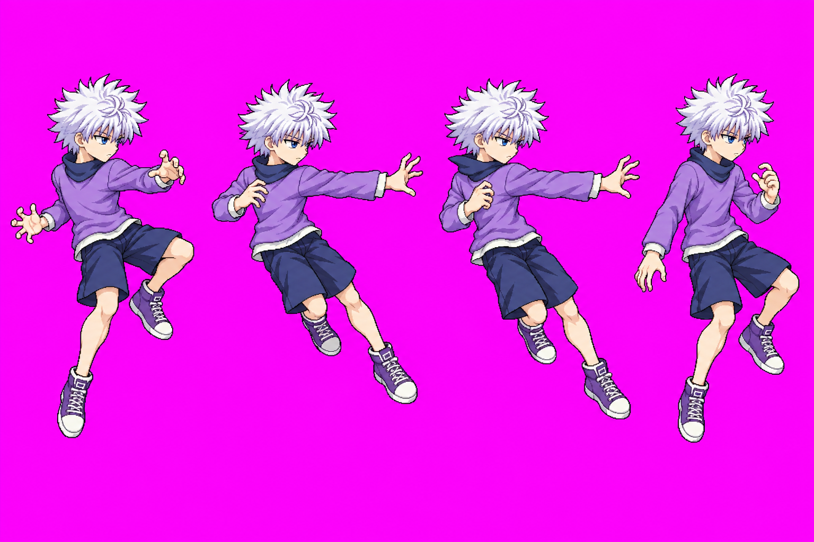
Diagnostic only · scale: drift · head 0.908
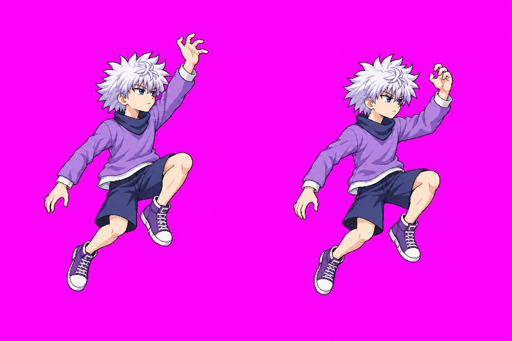
Diagnostic only · scale: pop · head 1.124
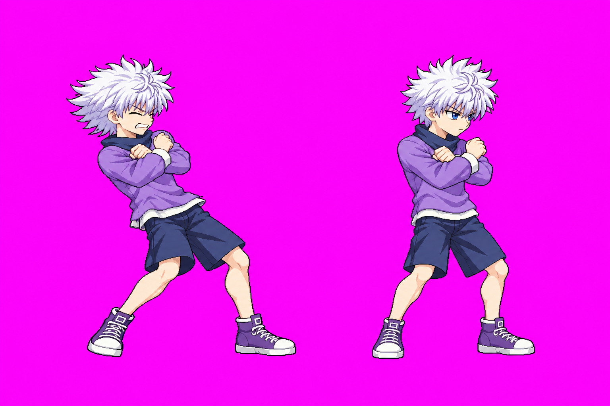
Diagnostic only · scale: ok · head 1.005
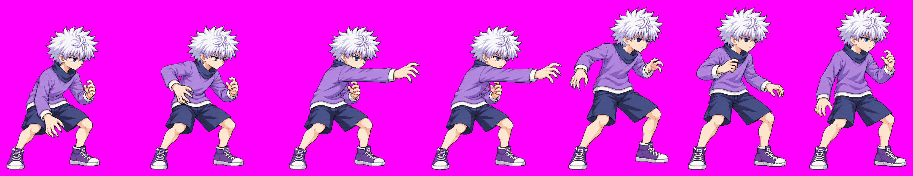
Diagnostic only · scale: pop · head 1.023
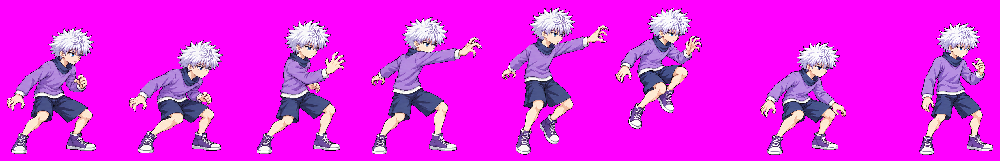
Diagnostic only · scale: unmeasured · head 0.874
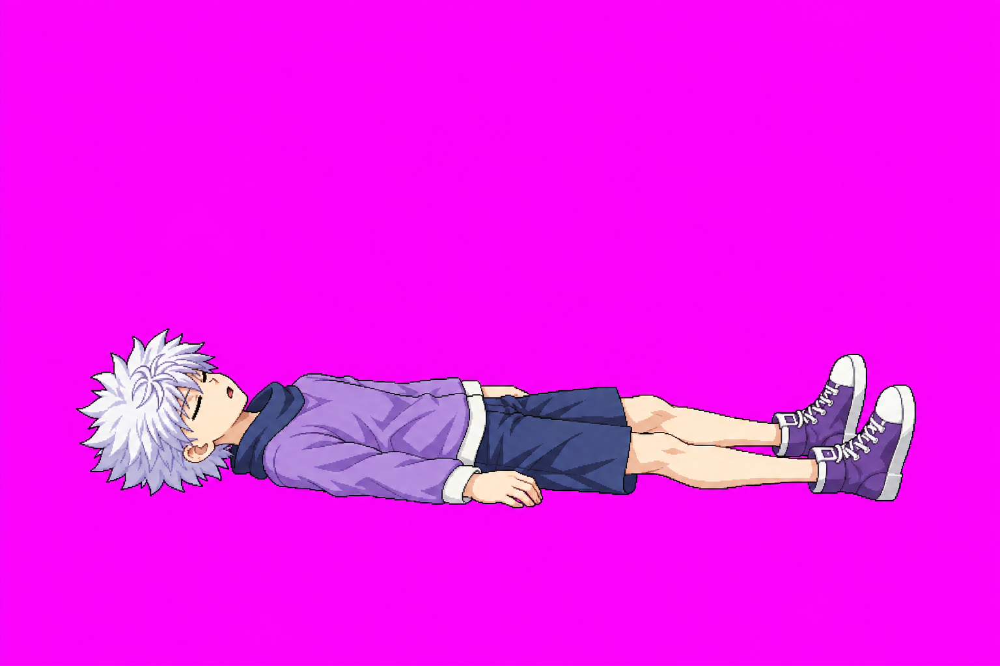
Diagnostic only · scale: unmeasured · head 0.841
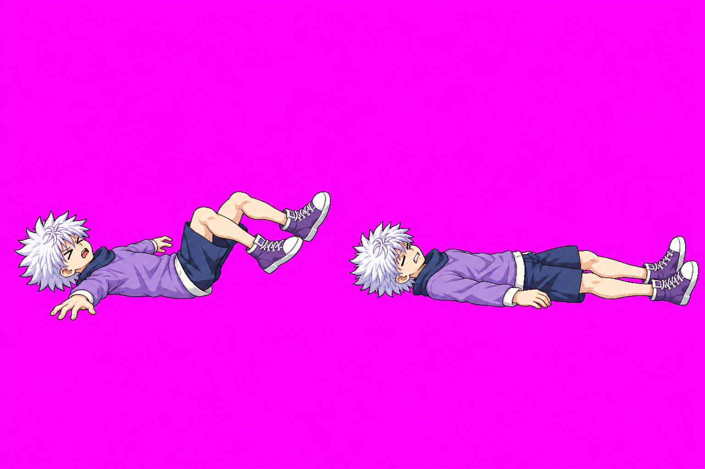